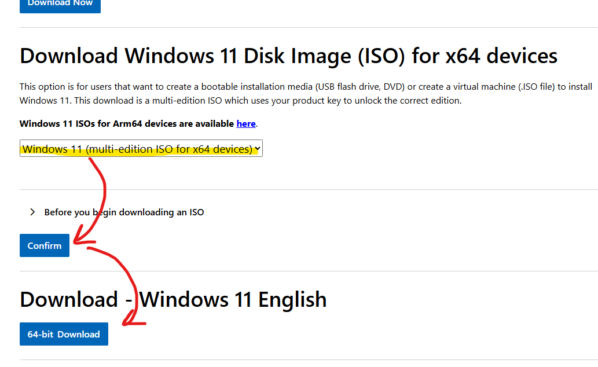

The symptom
Why "Running" and "Not Listening" can both be true
Remote Desktop service (TermService): Running
RDP listener on port 3389: Not Listening
The service is technically running, but the part of Windows that actually accepts incoming RDP connections (the listener) is not bound to port 3389. That mismatch is usually caused by a Windows Update corrupting or replacing a system component that RDP depends on. The service still starts, but it can't open its listening port, so no RDP client can connect.
An in-place Windows repair reinstalls the affected system files while keeping your apps and data, which normally restores the listener.
The fix: in-place Windows repair
Reinstall the Windows files that power RDP, without touching your apps or data
This is a repair, not a clean install. It does not delete your apps or personal files. Still, back up anything important before you begin.
-
01
Download the official Windows 11 installer
-
02
Choose the multi-edition ISO
Scroll to the third section, "Download Windows 11 Disk Image (ISO) for x64 devices". Open the dropdown and select Windows 11 (multi-edition ISO), then click Confirm and 64-bit Download.

Select "Windows 11 (multi-edition ISO)", then Confirm, then 64-bit Download. -
03
Mount the ISO
In your Downloads folder, right-click the downloaded
.isofile and choose Mount. It then opens like a virtual DVD drive.If nothing opens, go to This PC in File Explorer and double-click the new DVD drive.
-
04
Run setup.exe and keep your apps and data
Open the mounted drive and run
setup.exe. Follow the prompts toward Install.Stop if you don't see "Keep personal files and apps." If that option is missing, you picked the wrong media (possibly the wrong language). Stop and start over from step 2.
-
05
(Re)install TermWrap from RDPWrapKit
Once the repair is complete, run the RDPWrapKit installer again and choose the TermWrap option to (re)install it.
-
06
Confirm RDP is listening
Open the Show RDP Info page again. RDP should now report Listening on port 3389, and your desktop RDP shortcut will connect.
Still showing "Not Listening"?
Let us know what you're seeing so we can keep improving these fixes